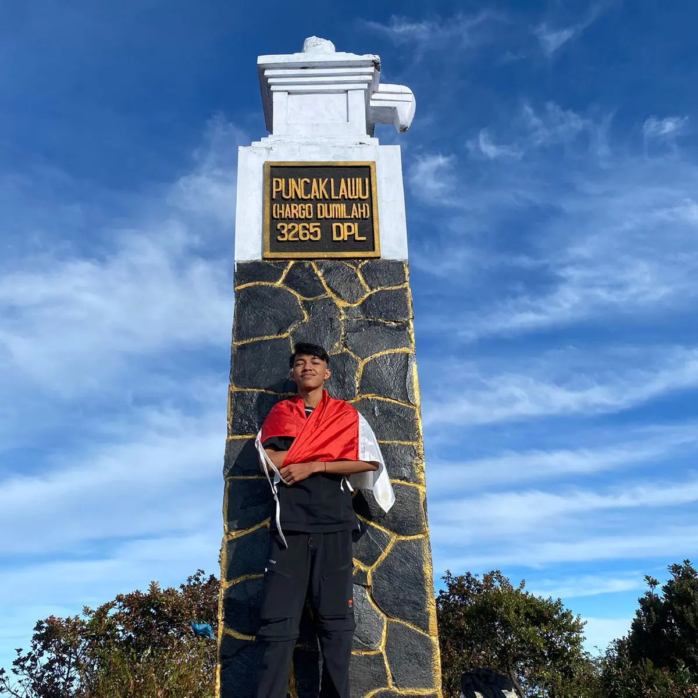
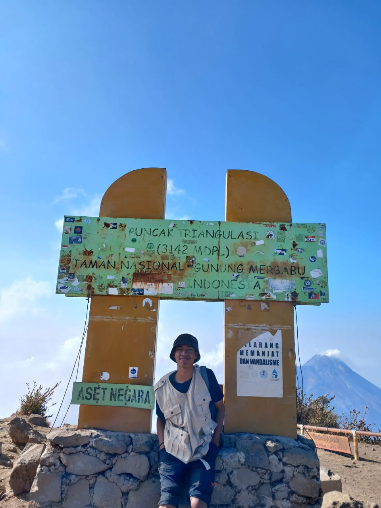
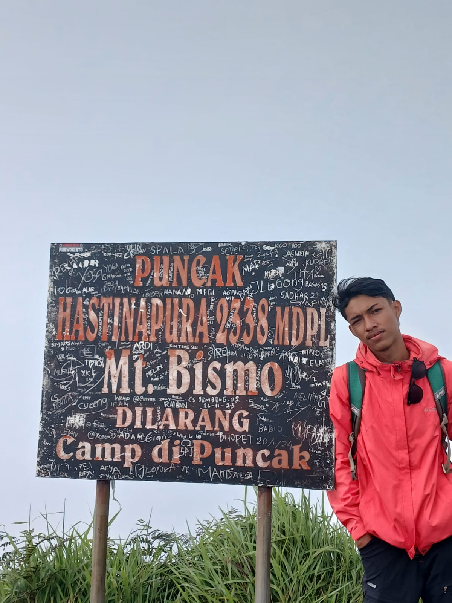

Profil Saya
Nama saya Jalu Adi Saputra. Saya lahir pada tanggal 22 Agustus 2006
Saya berasal dari Semarang, Jawa Tengah.
Informasi detail tentang Saya
Kembali ke Atas
Hobi Saya
Hobi saya adalah Mendaki Gunung dan Bermain Game.
Sejak dari SMA saya diberi izin orang tua untuk mendaki gunung, maka dari itu saya senang mendaki gunung.
Game favorite saya adalah Mobile legend, saya bermain mobile legend dari SMP. Game ini menantang karena butuh konsenterasi dan kerja sama tim.
Informasi detail tentang Hobi Saya
Kembali ke Atas
Pedidikam Saya
Saya alumni SD Negeri Wates 02 Semarang, SMP Negeri 28 Semarang, SMA Negeri 16 Semarang.
Dan sekarang saya melanjutkan kuliah di UDINUS.
Informasi detail tentang Pendidikan Saya
Kembali ke Atas
Karir Saya
Saya pernah bekerja menjaga stand makanan "Bakwan Serundai" di UPTOWN MALL BSB dan di gudang JNT EXPRESS.
Informasi detail tentang Karir Saya
Kembali ke Atas
Galeri Saya
Gunung yang pernah saya daki
Sindoro

Lawu

Merbabu

Bismo
Informasi detail tentang Galeri Saya
Kembali ke Atas